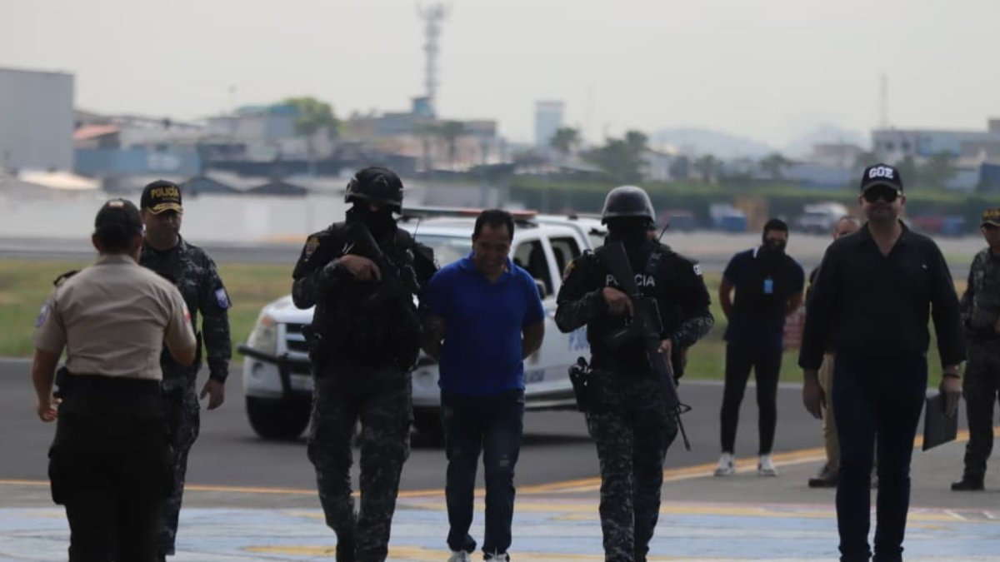

Seis personas, entre ellas el representante de la empresa Nina Bananas, fueron detenidas por estar supuestamente involucradas en el tráfico ilegal de drogas hacia Europa y otras partes del mundo. Estos seis sujetos fueron presentados en la tarde del viernes 8 de mayo en Guayaquil.
De acuerdo con las declaraciones del ministro del Interior, John Reimberg, la investigación que derivó en la aprehensión de estos sujetos inició hace seis meses y tomó al menos 12 horas de operación en el territorio, en zonas como Daule (urbanización Villas del Rey), Guayaquil (Alborada, Juan Montalvo, vía a la costa y Bastión Popular), Samborondón (urbanización Isla Bonita) y Paján, en Manabí.
El alto funcionario explicó que la empresa funcionaba de tal manera que la carga que supuestamente exportaban, procesados de plátano verde (chifles), era contaminada en las vías y luego llevada hasta dos puertos de Guayaquil, donde se embarcaba el cargamento ilegal hacia países como España, Estados Unidos, Sierra Leona y Bélgica.
De esta manera, la organización criminal habría transportado más de 10 toneladas de droga; sin embargo, la afectación económica ascendería a más de 400 millones de dólares.
“Los detenidos son el dueño y quien ayer salió del país y luego fue detenido en Estados Unidos gracias a la cooperación internacional; Játiva Murillo Henry; Bravo Pinto Danny, quien era un mando medio y que tenía movimientos de un millón de dólares en sus cuentas. Ellos contrataban una compañía y ponían candados satelitales que eran retirados y puestos en otros vehículos para que no se note que el camión de la carga se desviaba para contaminarlos”, explicó Reimberg.
Finalmente, el ministro aseguró que las investigaciones continuarán para dar con las cuentas desde las que se realizaban los movimientos económicos.